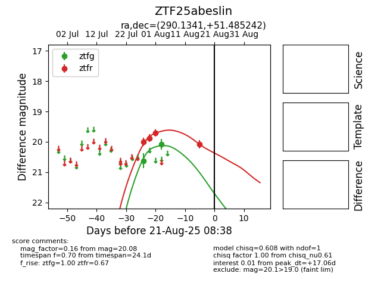

Target ZTF25abeslin at 2025-08-21 08:38, see:
FINK: fink-portal.org/ZTF25abeslin
Lasair: lasair-ztf.lsst.ac.uk/objects/ZTF25abeslin
ALeRCE: alerce.online/object/ZTF25abeslin
alt names
ZTF25abeslin (ztf,alerce)
coordinates:
equatorial (ra, dec) = (290.1341,+51.48524)
galactic (l, b) = (82.7848,+16.65491)
photometry
last ztfg=20.08, ztfr=20.08
2 ztfg, 4 ztfr detections
